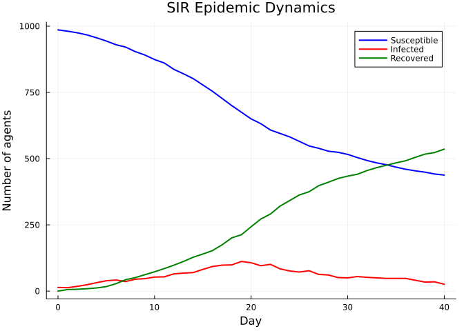

Introduction to Starsim.jl
Simon Frost
- Overview
- Quick start
- Building a basic SIR model
- Accessing results
- Exporting to DataFrame
- Plotting the epidemic curve
- Next steps
Overview
Starsim.jl is a Julia port of the Starsim agent-based modeling framework for simulating disease transmission. It provides a modular architecture where diseases, contact networks, demographics, interventions, and analyzers are independent components that can be composed into complex simulations.
Key features:
- Agent-based: Each individual is tracked with unique states
- Modular: Mix and match diseases, networks, demographics, and interventions
- Fast: Native Julia compilation (no separate Numba step)
- CRN-safe: Common Random Numbers support for robust scenario comparison
- GPU-ready: Parametric array types allow Metal.jl/CUDA.jl backends
Quick start
The simplest way to run a simulation is the demo() function, which sets up an SIR model on a random contact network.
using Starsim
sim = demo(n_agents=1000, verbose=0)Sim(1000 agents, 0.0→40.0, dt=1.0, nets=1, dis=1, status=complete)Building a basic SIR model
Let’s build the same simulation explicitly to understand the components.
n_contacts = 10
beta = 0.5 / n_contacts # R₀ ≈ beta × n_contacts × dur_inf = 2
sim = Sim(
n_agents = 1_000,
networks = RandomNet(n_contacts=n_contacts),
diseases = SIR(beta=beta, dur_inf=4.0, init_prev=0.01),
dt = 1.0, # 1 day timestep
stop = 40.0, # simulate for 40 time units (10× infectious period)
rand_seed = 42,
verbose = 0,
)
run!(sim)Sim(1000 agents, 0.0→40.0, dt=1.0, nets=1, dis=1, status=complete)Understanding the parameters
n_agents = 1000: Simulate 1,000 individualsRandomNet(n_contacts=10): Each agent has ~10 contacts per day (bidirectional, so 5 edges created per agent)beta = 0.5 / n_contacts = 0.05: Transmission rate per contact, chosen so that R₀ ≈ β × c × D = 0.05 × 10 × 4 = 2SIR(dur_inf=4.0, init_prev=0.01): Mean infectious period of 4 time units, 1% initial prevalencedt = 1.0: Time is measured in daysstop = 40.0: Run for 40 time units (10× the infectious period)
Accessing results
Results are stored per-module. Access them by disease name and result name:
n_sus = get_result(sim, :sir, :n_susceptible)
n_inf = get_result(sim, :sir, :n_infected)
n_rec = get_result(sim, :sir, :n_recovered)
prev = get_result(sim, :sir, :prevalence)
println("Peak prevalence: $(round(maximum(prev), digits=4))")
println("Final susceptible: $(Int(n_sus[end]))")
println("Final recovered: $(Int(n_rec[end]))")Peak prevalence: 0.112
Final susceptible: 438
Final recovered: 536Exporting to DataFrame
Convert all results to a tidy DataFrame for further analysis:
using DataFrames
df = to_dataframe(sim)
println("Columns: ", names(df))
println("Rows: ", nrow(df))
first(df, 5)Columns: ["time", "n_alive", "sir_new_infections", "sir_n_susceptible", "sir_n_infected", "sir_n_recovered", "sir_prevalence"]
Rows: 40<div><div style = "float: left;"><span>5×7 DataFrame</span></div><div style = "clear: both;"></div></div><div class = "data-frame" style = "overflow-x: scroll;">
| Row | time | n_alive | sirnewinfections | sirnsusceptible | sirninfected | sirnrecovered | sir_prevalence |
|---|---|---|---|---|---|---|---|
| Float64 | Float64 | Float64 | Float64 | Float64 | Float64 | Float64 | |
| 1 | 0.0 | 1000.0 | 4.0 | 986.0 | 14.0 | 0.0 | 0.014 |
| 2 | 1.0 | 1000.0 | 5.0 | 981.0 | 13.0 | 6.0 | 0.013 |
| 3 | 2.0 | 1000.0 | 6.0 | 975.0 | 18.0 | 7.0 | 0.018 |
| 4 | 3.0 | 1000.0 | 8.0 | 967.0 | 24.0 | 9.0 | 0.024 |
| 5 | 4.0 | 1000.0 | 11.0 | 956.0 | 32.0 | 12.0 | 0.032 |
</div>
Plotting the epidemic curve
using Plots
tvec = 0:length(n_sus)-1
plot(tvec, n_sus, label="Susceptible", lw=2, color=:blue)
plot!(tvec, n_inf, label="Infected", lw=2, color=:red)
plot!(tvec, n_rec, label="Recovered", lw=2, color=:green)
xlabel!("Day")
ylabel!("Number of agents")
title!("SIR Epidemic Dynamics")
Next steps
- Vignette 02: Building custom models with different components
- Vignette 03: Adding births and deaths with demographics
- Vignette 04: Working with different disease models (SIS, SEIR)
- Vignette 08: Measles outbreak modeling with SEIR